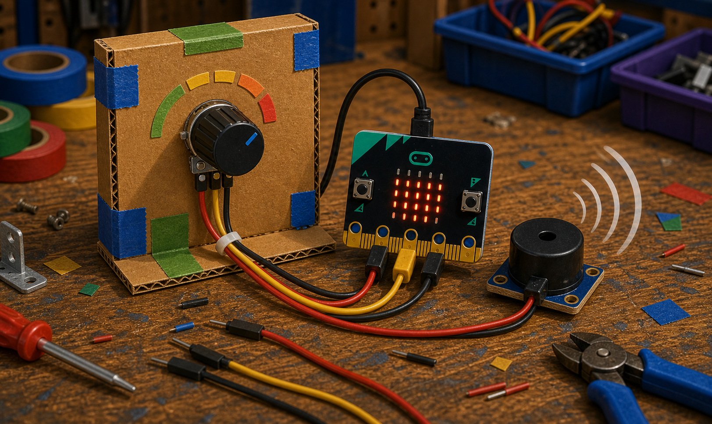
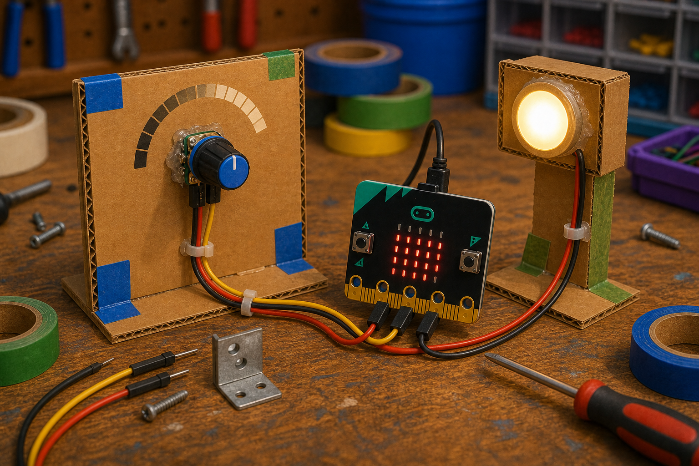

Volume dial
DetectKnob position
→
DecideHow loud it should be
→
DoSet the buzzer pitch
A potentiometer is a knob that changes its resistance as you turn it.
Wired as a voltage divider, it gives the micro:bit a value that rises and falls as you turn it.
With a micro:bit, you read it on an analog pin to get a number from 0 to 1023.


from microbit import *
while True:
value = pin0.read_analog()
display.scroll(value)basic.forever(function () {
let value = pins.analogReadPin(AnalogPin.P0)
basic.showNumber(value)
})pin0.read_analog() returns 0 at one end and 1023 at the other. Only P0, P1 and P2 can read analog values.